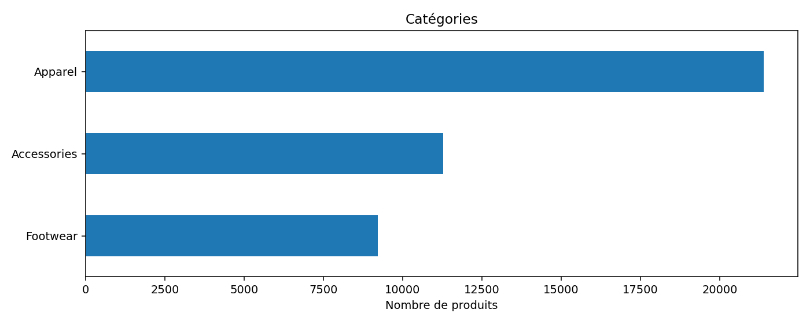
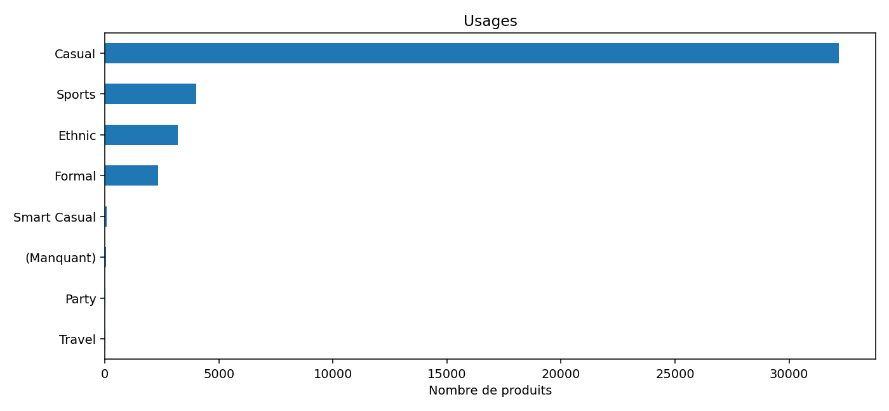
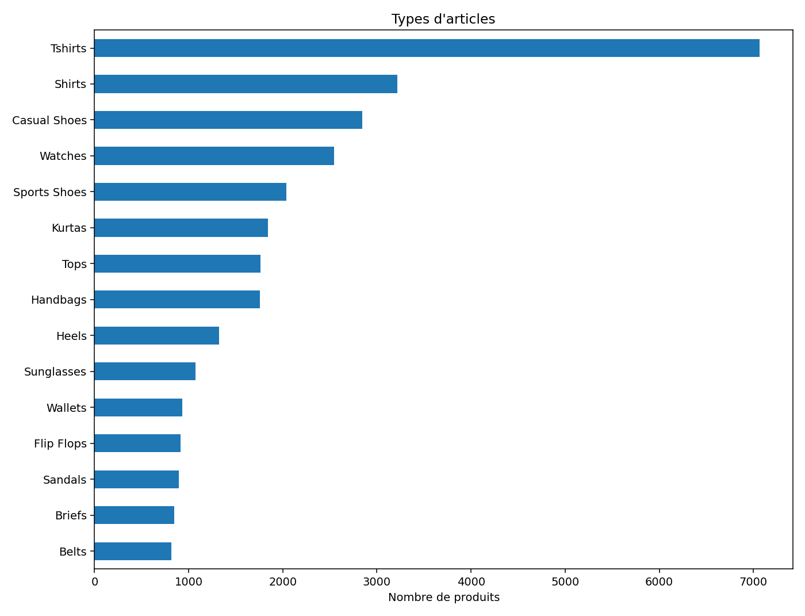
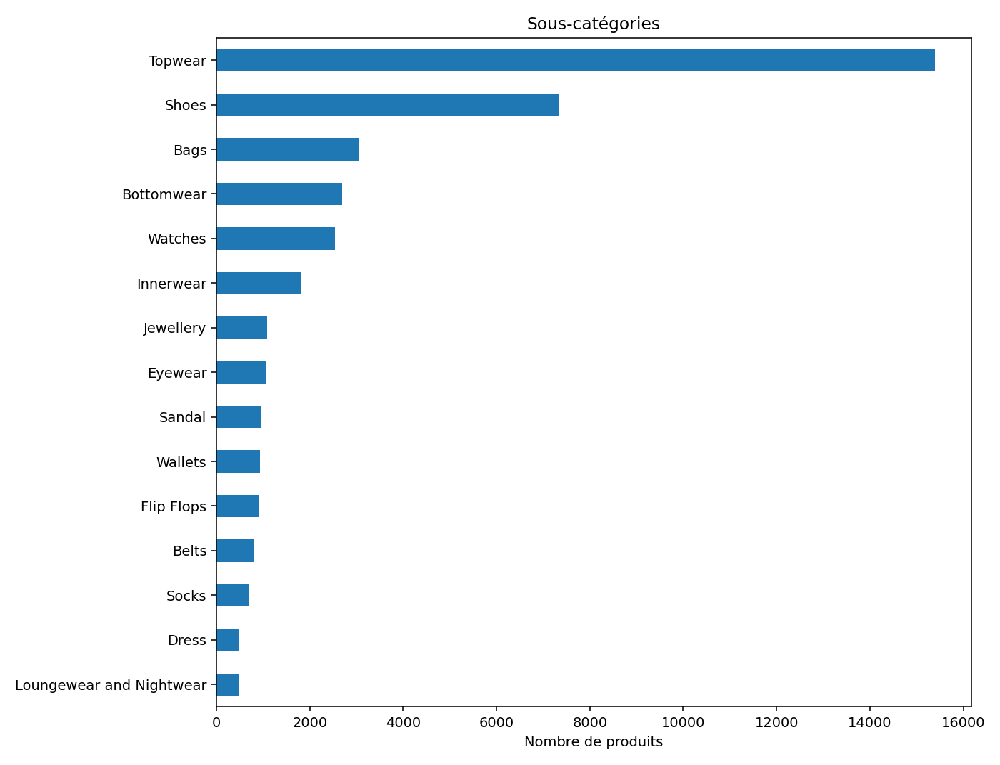
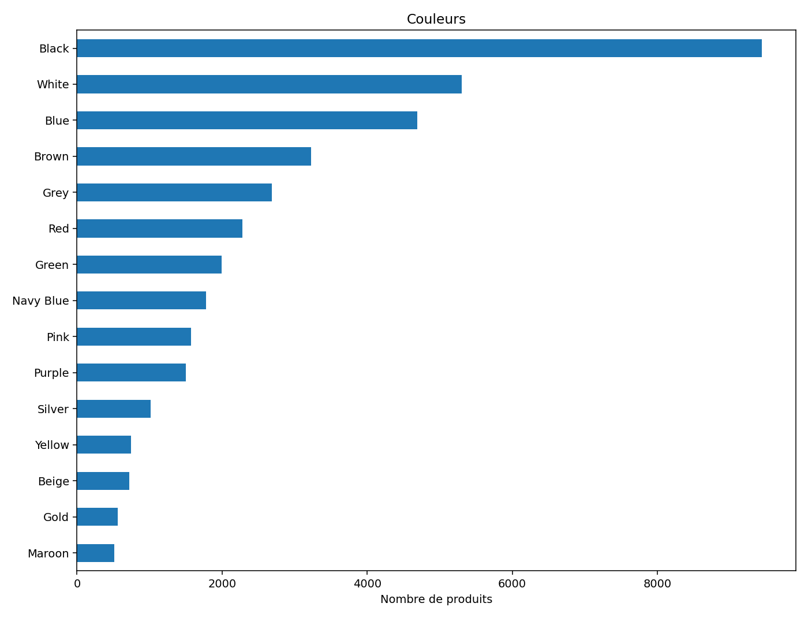
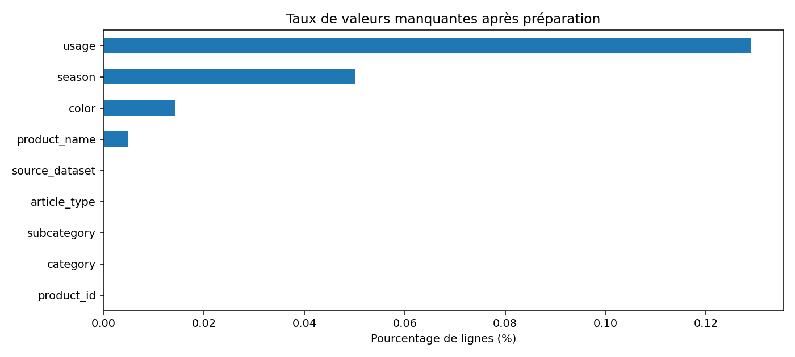
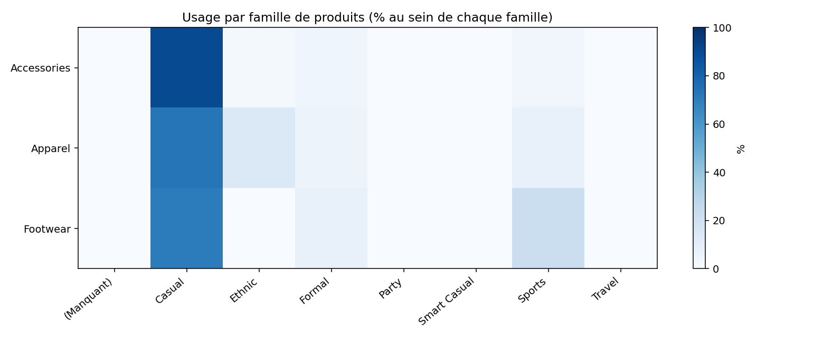

41890Produits après préparation
0Doublons identifiants
9Champs
80Profils synthétiques
Ce que l'on peut conclure
Le catalogue contient 41,890 références après préparation. Les graphiques caractérisent sa répartition et les données manquantes. La qualité finale doit être interprétée à la lumière des rejets et des exclusions de la source.
Familles de produits

Usages vestimentaires

Types d’articles (top 15)

Sous-catégories (top 15)

Couleurs (top 15)

Complétude des champs

Catégorie × usage

Traçabilité des exclusions
| Motif | Nombre |
|---|---|
| missing_required_fields | 0 |
| non_integer_product_id | 0 |
| duplicate_product_ids | 0 |
| non_target_categories | 2534 |
| limited_for_sample | 0 |
Limites et décisions à valider
- Ce rapport décrit le catalogue APRÈS préparation. Les anomalies brutes et exclusions sont consignées dans rapport_catalogue.json.
- La surreprésentation d’un usage peut limiter la couverture de certains besoins ; elle n’établit pas à elle seule une discrimination.
- Les produits Kaggle ne possèdent pas de prix ni de tailles utilisables. Les budgets et tailles des profils ne peuvent donc pas être reliés automatiquement au catalogue.
- Le champ 'usage' n'est pas une taxonomie complète de styles vestimentaires.
- Aucune photo de personne réelle n'est nécessaire pour cette démonstration.
- Catégories françaises des profils non alignées sur les familles Kaggle : créer un mapping explicite avant la recommandation.
- Styles synthétiques (chic, streetwear, etc.) non directement disponibles dans le champ usage Kaggle : ne pas assimiler automatiquement les vocabulaires.
- Les budgets fictifs ne sont pas utilisables pour filtrer le vrai catalogue : prix absents de Kaggle.
- Les tailles préférées ne sont pas utilisables pour filtrer le vrai catalogue : tailles absentes de Kaggle.
- Durée fictive de 90 jours à valider avec les DPO : ce n'est pas une obligation RGPD générale.
Rapport généré à partir des fichiers locaux. Aucune donnée réelle d'utilisateur utilisée.